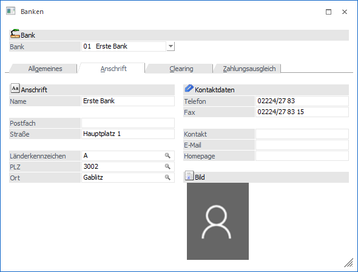

Anschrift
Ø Name
30stellig, alphanumerisch, Name des Auftraggeber-Geldinstitutes
Ø Postfach
Erweiterung der Adresse
Ø Straße
30stellig, alphanumerisch, Eingabe des Straßennamens
Ø Länderkennzeichen
Hier kann das Länderkennzeichen (A, D, CZ, ...) eingegeben werden. Aufgrund des im Bankenstamm eingetragenen Länderkennzeichens erfolgt die Zuordnung des Ausgabeformates für die Clearingdatei. D. h. in einem österreichischen Mandanten kann auch für eine Deutsche Hausbank eine Clearing-Datei erstellt werden. Nur wenn im Eingabefeld kein Länderkennzeichen hinterlegt wurde, greift das Programm auf die Ländereinstellungen in den FIBU-Parameter zurück. Wenn als Länderkennzeichen H für Ungarn eingetragen wird und in weiterer Folge im Zahlungsverkehr nur Forint (HUF) verwendet werden, dann wird eine Zahlungsdatei im ungarischen Format erstellt (mit der Erweiterung .UNG).
Ø PLZ
9stellig, alphanumerisch, Eingabe der Postleitzahl. Durch Drücken der F9-Taste kann nach allen angelegten Postleitzahlen gesucht werden.
Ø Ort
25stellig, alphanumerisch, Eingabe des Ortes. Durch Drücken der F9-Taste kann nach allen angelegten Orten gesucht werden.
Kontaktdaten
Ø Tel/Fax
Eingabe der Telefon- bzw. Faxnummer. Es stehen jeweils 15 Felder zur Verfügung.
Ø Kontakt
Eingabe des Ansprechpartners bei der Bank.
Ø eMail
Eingabe der E-Mail-Adresse.
Ø Homepage
Eingabe der Homepage.
Bild
Ø Bild
Durch Anwählen des Bildsymbols kann über die Bildersuche eine Datei ausgewählt werden. Die Dateien können aus der WinLine Datenbank, aus einem Datenträger oder aus dem Internet aufgerufen werden.